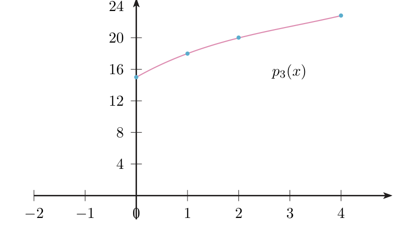
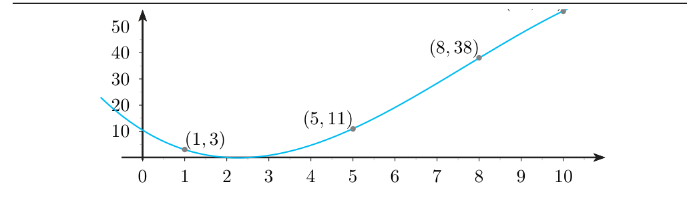

Interpolación polinómica
Cómo encontrar un polinomio que pase exactamente por una lista de puntos, cómo construirlo con la tabla de diferencias divididas de Newton y cuánto se equivoca fuera de los puntos.
0Antes de empezar U pp.119-120
Tienes una tabla de datos (por ejemplo, la temperatura de una habitación a las 0, 1, 2 y 4 horas) y quieres una fórmula que reproduzca esos datos exactamente y que sirva para estimar valores intermedios. Lo más sencillo es unir los puntos con segmentos (una poligonal), pero queda «picuda». Si quieres una curva suave, fácil de construir y de evaluar, lo mejor es un polinomio: el polinomio interpolador. En 3.1 el polinomio de Taylor copiaba a $f$ en un solo punto (usando derivadas); aquí el polinomio copia a $f$ en varios puntos (usando solo valores) y aproxima bien en todo el intervalo.
U pp.119-120Qué necesitas saber ya
- Polinomios: grado, raíces, y que un polinomio no nulo de grado $\le n$ tiene como mucho $n$ raíces. P
- Teorema de Rolle (solo para el apartado 4, el error). U p.95
- Polinomio de Taylor y su resto de Lagrange, para comparar (tema 3.1). U p.111
Mapa del tema
| Apartado | Qué contiene | Dónde está |
|---|---|---|
| 1 Qué es interpolar | nodos, polinomio interpolador, grado $\le n$, existencia y unicidad, recta y parábola | U pp.119-122 |
| 2 Diferencias divididas | definición, tabla de diferencias | U p.123 |
| 3 Forma de Newton | el polinomio con la diagonal superior; añadir un nodo | U p.124 |
| 4 Error de interpolación | forma de Lagrange (apuntes propios, sin verificar contra las notas adicionales) | P |
| 5 Fuera de examen | splines | U p.121 |
| 6 Ejercicios | E 3.21–3.28 con receta | E pp.107-113 |
| 7 Ejemplos propios | 4 ejemplos, de fácil a difícil | propio |
| 8 Examen | problemas reales de X | X |
| 9 Chuleta y comprobación | fórmulas, lista | síntesis |
Qué se pide en los ejercicios y en el examen
(A) Calcular el polinomio interpolador de 3 o 4 datos con diferencias divididas y, casi siempre, evaluarlo en un punto (E 3.24-3.25, 3.27; X pp.5, 57, 101, 119, 151). (B) Preguntas teóricas de grado y unicidad: ¿el grado es exactamente $n$?, ¿puede haber más de uno? (E 3.21-3.23, 3.26). (C) Añadir un nodo sin repetir la tabla (E 3.27-3.28). (D) Preguntas que mezclan interpolación con trapecio y Simpson del Tema 6 (X pp.65-66, 85, 100, 107). Los splines no se preguntan.
U recomienda representar gráficamente los datos antes de resolver, para anticipar qué tipo de polinomio saldrá, y comprobar el resultado al final, porque «el proceso de interpolación supone realizar diversas operaciones y es fácil equivocarse». La comprobación es barata: sustituye el polinomio en dos o tres nodos y mira que da el dato.
U p.1201Qué es interpolar: nodos, polinomio interpolador, existencia y unicidad U pp.120-122
Dos puntos determinan una recta; tres puntos (no alineados), una parábola; cuatro, una cúbica. En general, $n+1$ puntos con abscisas distintas determinan un único polinomio de grado $\le n$ que pasa por todos ellos. Es como un ajuste «a medida» sin sobrantes: tantos datos como coeficientes libres ($a_0,\dots,a_n$ son $n+1$ números).
U pp.120-121Se dispone de datos $(x_k,f_k)$ para $k=0,\dots,n$. Los números $x_k$ (distintos) se llaman nodos y $f_k$ es el valor de la función $f(x)$ en $x_k$. Se busca un polinomio $$p_n(x)=a_0+a_1x+\cdots+a_nx^n\quad\text{tal que}\quad p_n(x_k)=f_k,\ \ k=0,\dots,n.$$ Ese $p_n$ se llama polinomio de interpolación o polinomio interpolador.
U pp.120-121Las $n+1$ condiciones $p_n(x_k)=f_k$ forman un sistema de $n+1$ ecuaciones lineales con $n+1$ incógnitas $a_0,\dots,a_n$. Por eso el grado de $p_n$ es $n$ como máximo (puede ser menor). El polinomio existe y es único. U afirma la unicidad («muy sencilla», remite a un libro externo) y prueba la existencia construyéndolo con diferencias divididas de Newton (apartados 2-3).
U p.121Si $p$ y $q$ tienen grado $\le n$ y coinciden en los $n+1$ nodos, su diferencia $d=p-q$ tiene grado $\le n$ y se anula en $n+1$ puntos distintos. Un polinomio no nulo de grado $\le n$ tiene como mucho $n$ raíces (cada raíz $r$ aporta un factor $(x-r)$ y no caben más de $n$ factores). Luego $d\equiv0$ y $p=q$.
Consecuencia práctica, la usarás mucho: si encuentras de cualquier forma (a ojo, porque los puntos están alineados, etc.) un polinomio de grado $\le n$ que pase por los $n+1$ datos, ese es el interpolador. No hay otro.
P«Grado $n$» es el máximo, no lo obligatorio. Con tres puntos alineados el interpolador es una recta (grado 1), no una parábola. Hasta U lo escribe así en el Ej. 3.18: «Su grado es 3, porque tenemos 4 datos»; es cierto allí porque la última diferencia dividida vale $\frac1{12}\neq0$. Lo seguro es «grado $\le3$».
U p.124Con 2 o 3 datos puedes plantear el sistema y resolverlo a mano (lo haces en el ejemplo P1). Con 4 o más, U advierte de que «la resolución de este sistema … puede ser una tarea ardua»; por eso se usa el método de las diferencias divididas de Newton, que no necesita resolver ningún sistema.
U p.121Temperatura de una habitación al encender la calefacción: $x_k=0,1$ (horas) y $f_k=15,18$ (grados).
- Recta por dos puntos. La recta por $(x_0,f_0)$ con pendiente $m$ es $p_1(x)-f_0=m(x-x_0)$. Aquí $m=\frac{f_1-f_0}{x_1-x_0}=\frac{18-15}{1-0}=3$.
- Resultado: $p_1(x)=15+3x$. Esa pendiente $m$ aproxima la derivada de $f$, en analogía con el polinomio de Taylor de orden 1.
- Un tercer dato $(2,20)$. Se parte de $p_1$ y se suma un término que no estropea los datos anteriores (se anula en $0$ y en $1$): $p_2(x)=3x+15-\tfrac12\,x(x-1)$. El número $-\tfrac12$ se fija con el nuevo dato y aproxima la derivada segunda.
- Comprobación (U la deja al lector): $p_2(0)=15$, $p_2(1)=18$, $p_2(2)=6+15-1=20$. ✓
Este «ir añadiendo un término que no estropea lo anterior» es exactamente el método de Newton del apartado 3.
U pp.121-1222Diferencias divididas y tabla de diferencias U p.123
Una diferencia dividida de orden 1 es una pendiente (cociente incremental entre dos nodos). Una de orden 2 es la «pendiente de las pendientes»: mide cuánto se curva la gráfica. Una de orden 3, cómo cambia esa curvatura, y así sucesivamente. U lo dice con otras palabras: las diferencias divididas «son una aproximación de la derivada de orden $m$». Cada una se calcula con las del orden anterior, y se organizan en una tabla.
U pp.122-123Orden 0: $f[x_k]=f_k$ (el valor de la función en el nodo).
Orden 1: $\displaystyle f[x_k,x_{k+1}]=\frac{f[x_{k+1}]-f[x_k]}{x_{k+1}-x_k}=\frac{f_{k+1}-f_k}{x_{k+1}-x_k}.$
Orden $m$ (recursiva):
$$f[x_k,\dots,x_{k+m}]=\frac{f[x_{k+1},\dots,x_{k+m}]-f[x_k,\dots,x_{k+m-1}]}{x_{k+m}-x_k}.$$
Numerador: «la casilla de la columna anterior de abajo menos la de arriba». Denominador: el nodo más alto menos el nodo más bajo del grupo que abarca la casilla (los de los extremos, no los vecinos). La forma más sencilla de calcularlas es en una tabla, la tabla de diferencias.
U p.123Datos: $x_k=0,1,2,4$ y $f_k=15,18,20,23$ (temperatura a distintas horas).
| $x_k$ | $f[x_k]$ | orden 1 | orden 2 | orden 3 |
|---|---|---|---|---|
| 0 | 15 | $\frac{18-15}{1-0}=\mathbf{3}$ | $\frac{2-3}{2-0}=-\mathbf{\tfrac12}$ | $\frac{-\frac16+\frac12}{4-0}=\mathbf{\tfrac1{12}}$ |
| 1 | 18 | $\frac{20-18}{2-1}=2$ | $\frac{\frac32-2}{4-1}=-\frac16$ | |
| 2 | 20 | $\frac{23-20}{4-2}=\frac32$ | ||
| 4 | 23 |
En negrita, la diagonal superior ($15,\ 3,\ -\frac12,\ \frac1{12}$): son las que se usan para construir el polinomio. Fíjate en los denominadores del orden 2: $2-0$ y $4-1$, los nodos de los extremos de cada grupo de tres. (En U las columnas de la tabla van desplazadas medio renglón entre filas; aquí se alinean arriba, con los mismos valores.)
U p.123En el orden 2 o 3, dividir entre la diferencia de nodos vecinos (por ejemplo $x_2-x_1$) en vez de entre los extremos ($x_2-x_0$). Otro error: restar «arriba menos abajo», que cambia el signo de todo.
P3La forma de Newton del polinomio interpolador U p.124
Se construye apilando capas. Capa 0: una constante que acierta en $x_0$. Capa 1: una recta que lleva el factor $(x-x_0)$, así que vale 0 en $x_0$ (no estropea la capa 0) y se ajusta para acertar en $x_1$. Capa 2: una parábola con factor $(x-x_0)(x-x_1)$, que no toca los dos primeros nodos y acierta en $x_2$. Y así hasta el último dato. El coeficiente de cada capa es una diferencia dividida de la diagonal superior.
U pp.121-124$$p_n(x)=f[x_0]+f[x_0,x_1](x-x_0)+f[x_0,x_1,x_2](x-x_0)(x-x_1)+\cdots+f[x_0,\dots,x_n](x-x_0)(x-x_1)\cdots(x-x_{n-1}).$$ El término de orden $m$ lleva $m$ factores: $(x-x_0)\cdots(x-x_{m-1})$. El último factor es $(x-x_{m-1})$, no $(x-x_m)$.
U p.124- Diagonal superior del Ej. 3.17: $15,\ 3,\ -\frac12,\ \frac1{12}$ (U lo resalta: «elegimos las diferencias de la diagonal superior»).
- Newton: $p_3(x)=15+3(x-0)-\tfrac12(x-0)(x-1)+\tfrac1{12}(x-0)(x-1)(x-2)$.
- Desarrollado: $p_3(x)=\tfrac1{12}x^3-\tfrac34x^2+\tfrac{11}3x+15$.
- Comprobación: $p_3(4)=\frac{64}{12}-12+\frac{44}3+15=23$ ✓.

$p_n(x)=p_{n-1}(x)+f[x_0,\dots,x_n]\,(x-x_0)\cdots(x-x_{n-1})$. «Al añadir un nuevo nodo no hace falta empezar todo el proceso de nuevo, basta con calcular las diferencias que nos faltan (que son las diferencias donde está $x_n$) y añadir este nuevo término.» El polinomio viejo se conserva; el término nuevo se anula en todos los nodos viejos.
U p.124$f[x_0,\dots,x_m]$ es el coeficiente de $x^m$ del interpolador de esos $m+1$ datos (en la forma de Newton solo el último término tiene $x^m$), y ese polinomio es único sea cual sea el orden en que se listen. Por eso los nodos no tienen que estar ordenados en la tabla, y un nodo nuevo se puede poner siempre al final de la lista. Lo usa el ejercicio 3.28.
PSi te piden $p(a)$ para un valor concreto (casi siempre), sustituye $a$ directamente en la forma de Newton y no desarrolles el polinomio: son menos cuentas y menos errores (y, con decimales, menos redondeo). Desarrolla en potencias de $x$ solo si el enunciado lo pide.
P4Cuánto se equivoca el interpolador: forma de Lagrange del error P
Sea $f$ con derivada de orden $n+1$ en un intervalo $I$ que contiene los nodos distintos $x_0,\dots,x_n$ y el punto $x$, y sea $p_n$ el interpolador. Existe $\xi\in I$ (entre el menor y el mayor de $x,x_0,\dots,x_n$) tal que $$f(x)-p_n(x)=\frac{f^{(n+1)}(\xi)}{(n+1)!}\,(x-x_0)(x-x_1)\cdots(x-x_n).$$ Si $|f^{(n+1)}|\le M$ en $I$, entonces $\ |f(x)-p_n(x)|\le\dfrac{M}{(n+1)!}\,|x-x_0|\cdots|x-x_n|.$
PTaylor: $\frac{f^{(n+1)}(c)}{(n+1)!}(x-x_0)^{n+1}$, con toda la información concentrada en un punto. Interpolación: el mismo $\frac{f^{(n+1)}}{(n+1)!}$, pero la potencia se reparte entre los $n+1$ nodos. El producto vale 0 en cada nodo (el interpolador es exacto allí) y es grande lejos de ellos: por eso extrapolar (evaluar fuera del intervalo de los nodos) es peligroso.
U p.111- Si $x$ es un nodo ambos lados valen 0. Supongamos que no lo es.
- Sea $w(t)=(t-x_0)\cdots(t-x_n)$ y elige $K$ con $f(x)-p_n(x)=K\,w(x)$ (posible, porque $w(x)\neq0$). Hay que ver que $K=\frac{f^{(n+1)}(\xi)}{(n+1)!}$ para algún $\xi$.
- La función $g(t)=f(t)-p_n(t)-K\,w(t)$ se anula en los $n+1$ nodos y en $t=x$: $n+2$ ceros.
- Rolle entre ceros consecutivos: $g'$ tiene al menos $n+1$ ceros; $g''$, al menos $n$; … ; $g^{(n+1)}$, al menos uno, $\xi$.
- Derivando $n+1$ veces: $p_n^{(n+1)}=0$ (grado $\le n$) y $w^{(n+1)}=(n+1)!$. Así $g^{(n+1)}(t)=f^{(n+1)}(t)-K\,(n+1)!$.
- En $\xi$: $0=f^{(n+1)}(\xi)-K(n+1)!$, o sea $K=\frac{f^{(n+1)}(\xi)}{(n+1)!}$. ∎
Caso particular: si $f$ es un polinomio de grado $\le n$, $f^{(n+1)}=0$ y el error es 0, es decir, el interpolador es $f$ (otra forma de ver la unicidad).
P5Fuera de examen: splines U p.121
Fuera de examen: splines (recuadro de U, p. 121)
Si los datos no son suaves y se sube el grado del polinomio, la curva puede oscilar mucho entre los datos. Una alternativa son los splines: polinomios a trozos (de grado bajo en cada tramo entre nodos) con condiciones de derivabilidad en los nodos para que la curva salga suave. No aparece en las preguntas de X ni en E.
6Ejercicios del libro, resueltos E pp.107-113
Orden de estudio recomendado: primero los de teoría (3.21, 3.22, 3.23, 3.26, solo razonar), luego los de cálculo (3.24, 3.25) y por último «añadir un nodo» (3.27, 3.28). Todos son de examen.
Ejercicio 3.21 · ¿9 puntos dan siempre grado 8? E p.107
Razona si es cierto o falso que el polinomio interpolador que pasa por 9 puntos debe ser un polinomio exactamente de grado 8.
- Qué me piden
- Decidir si el interpolador de 9 puntos tiene siempre grado exactamente 8; hay que dar «verdadero/falso» con un argumento.
- Cómo lo pienso
- «Grado 8» es el máximo permitido, no un grado obligatorio: si los 9 puntos están en una recta, la recta ya los cumple y es el interpolador. Basta un contraejemplo.
- Qué uso
- Existencia y unicidad del interpolador de grado $\le n$ (U §3.3.2, p. 121).
- Por dónde empiezo
- Elijo 9 puntos alineados, por ejemplo $(a,2a)$, y busco un polinomio de grado bajo que pase por todos.
- Grado máximo. Con 9 datos, $n+1=9$, luego $n=8$: el interpolador es $a_0+a_1x+\dots+a_8x^8$ (9 incógnitas, 9 ecuaciones). U: «el grado … es $n$ como máximo».
- Puede salir $a_8=0$. Nada obliga a que el coeficiente de $x^8$ sea distinto de 0.
- Contraejemplo (el de E): los puntos $(a,2a)$, $a=1,\dots,9$.
- Un candidato. $q(x)=2x$ pasa por todos ($q(a)=2a$) y tiene grado $1\le8$.
- Es el interpolador, por unicidad (apartado 1). Así $p_8(x)=2x$, de grado 1.
- Respuesta: falso. (Comprobado: Newton con esos 9 datos da $2x$.)
Ejercicio 3.22 · $n$ puntos de un polinomio de grado $n$ E p.107
Razona si es cierto o falso que si se interpolan $n$ puntos tomados de la gráfica de un polinomio de grado $n$ el resultado va a ser un polinomio de grado $n$.
- Qué me piden
- Decidir si, al interpolar $n$ puntos de la gráfica de un polinomio de grado $n$, el resultado es de grado $n$.
- Cómo lo pienso
- Cuento datos: $n$ puntos solo permiten $n$ coeficientes, o sea grado $\le n-1$. Con tan pocos datos no se puede «recuperar» el polinomio original; haría falta un dato más.
- Qué uso
- Con $m$ datos el interpolador tiene grado $\le m-1$ (U §3.3.2, pp. 120-121); unicidad (U p. 121).
- Por dónde empiezo
- Escribo cuántos coeficientes tiene el interpolador de $n$ puntos y comparo con el grado $n$.
- Cuenta los datos. Son $n$ puntos (índices $0,\dots,n-1$ en la notación de U).
- Grado máximo. El interpolador tiene $n$ coeficientes $a_0,\dots,a_{n-1}$: grado $\le n-1$ (U p. 121).
- Conclusión. Un polinomio de grado $\le n-1$ no puede ser de grado $n$. Falso, elijas los puntos que elijas.
- Por qué no se recupera el original. El polinomio original $P$ (grado $n$) pasa por los $n$ puntos, pero no es «el» interpolador (tiene grado $n$, no $\le n-1$). Harían falta $n+1$ puntos para recuperarlo (por unicidad).
- Ejemplo concreto. $P(x)=x^2$ ($n=2$) y los 2 puntos $(-1,1)$ y $(1,1)$: el interpolador es la constante $1$, no $x^2$.
Ejercicio 3.23 · ¿puede haber más de un interpolador? E p.107
Dados los siguientes datos: $f(1)=1$, $f(3)=2$, $f(4)=-1$, $f(5)=0$, ¿puede haber más de un polinomio interpolador de grado 3 o menor que coincida con $f$ en 1, 3, 4 y 5?
- Qué me piden
- Decidir si, con 4 nodos dados, puede haber más de un polinomio de grado $\le3$ que pase por ellos.
- Cómo lo pienso
- Muchas funciones pasan por 4 puntos, pero un polinomio de grado $\le3$ tiene justo 4 coeficientes y queda fijado por los 4 datos: solo hay uno.
- Qué uso
- Teorema de existencia y unicidad del interpolador de grado $\le n$ con $n+1$ nodos distintos (U §3.3.2, p. 121).
- Por dónde empiezo
- Cuento nodos distintos ($1,3,4,5$: cuatro, $n=3$) y aplico el teorema.
- Datos. 4 nodos distintos ($1,3,4,5$): $n=3$.
- Teorema. El interpolador de grado $\le n$ existe y es único (U p. 121).
- Respuesta: no. Solo hay uno.
- Matiz. Si se permite grado 4 o más, sí hay infinitos: $p_3(x)+c\,(x-1)(x-3)(x-4)(x-5)$ para cualquier $c$ (el producto se anula en los cuatro nodos).
- (Para practicar; no se pedía.) Orden 1: $\frac12,\ -3,\ 1$; orden 2: $-\frac76,\ 2$; orden 3: $\frac{19}{24}$. Luego $p_3(x)=1+\frac12(x-1)-\frac76(x-1)(x-3)+\frac{19}{24}(x-1)(x-3)(x-4)=\frac{19}{24}x^3-\frac{15}2x^2+\frac{485}{24}x-\frac{25}2$.
Contestar «sí, porque hay muchas funciones que pasan por esos puntos»: cierto para funciones, falso para polinomios de grado $\le3$.
Ejercicio 3.24 · polinomio de grado 3 por diferencias divididas E p.108
Determina, mediante diferencias divididas, el polinomio de grado 3 que interpola los siguientes datos: $k=0,1,2,3$; $x_k=1,5,8,10$; $f(x_k)=3,11,38,56$.
- Qué me piden
- El polinomio de grado 3 que pasa por $(1,3),(5,11),(8,38),(10,56)$, calculado con diferencias divididas.
- Cómo lo pienso
- Se construye el polinomio por capas: primero una constante, luego se añade lo que corrige la pendiente, luego la curvatura, etc. Cada capa sale de una columna de la tabla de diferencias.
- Qué uso
- Diferencias divididas (U p. 123) y forma de Newton (U p. 124).
- Por dónde empiezo
- Escribo los nodos y los valores en dos columnas y calculo la columna de orden 1 (diferencias entre nodos vecinos).
- Orden 0: $3,\ 11,\ 38,\ 56$.
- Orden 1 (nodos vecinos): $f[x_0,x_1]=\frac{11-3}{5-1}=2$; $f[x_1,x_2]=\frac{38-11}{8-5}=9$; $f[x_2,x_3]=\frac{56-38}{10-8}=9$.
- Orden 2 (denominador: extremos del grupo): $f[x_0,x_1,x_2]=\frac{9-2}{8-1}=1$; $f[x_1,x_2,x_3]=\frac{9-9}{10-5}=0$.
- Orden 3: $f[x_0,\dots,x_3]=\frac{0-1}{10-1}=-\frac19$.
- Tabla (en negrita, la diagonal superior):
$x_k$ $f[x_k]$ orden 1 orden 2 orden 3 1 3 2 1 $\mathbf{-\frac19}$ 5 11 9 0 8 38 9 10 56 - Forma de Newton: $\displaystyle p_3(x)=3+2(x-1)+(x-1)(x-5)-\tfrac19(x-1)(x-5)(x-8)$. Ya es una respuesta completa.
- (Solo si se pide en potencias de $x$.) $(x-1)(x-5)=x^2-6x+5$ y $(x-1)(x-5)(x-8)=x^3-14x^2+53x-40$. Sumando: $p_3(x)=-\tfrac19x^3+\tfrac{23}9x^2-\tfrac{89}9x+\tfrac{94}9$.
- Comprobación: $p_3(1)=3$, $p_3(5)=11$, $p_3(8)=38$, $p_3(10)=56$.

Dividir entre nodos vecinos ($8-5$) en vez de entre extremos ($8-1$) en el orden 2; o poner en el término de orden $m$ el factor $(x-x_m)$, que no va. Este ejercicio es literalmente X p.57 (Feb. 2015, Modelo B, Ej. 5), con la misma solución.
Ejercicio 3.25 · velocidad al frenar: recta frente a cúbica E pp.109-110
Hemos medido la velocidad de un coche al frenar, tras haber pasado 1 segundo, a los 2 segundos y a los 4 segundos (variable $t$). Los valores obtenidos aparecen en la tabla siguiente: $t$ (s): 0, 1, 2, 4; $v$ (km/h): 210, 180, 160, 140. (1) Determina el polinomio interpolador que aproxima los datos mediante diferencias divididas considerando únicamente los instantes inicial y final. (2) Determina el polinomio interpolador que aproxima los datos mediante diferencias divididas considerando todos los datos. (3) Aproxima la velocidad transcurridos 3 segundos desde que comience el frenado mediante ambos polinomios.
- Qué me piden
- Dos interpoladores de la velocidad de frenado: recta con los datos inicial y final, y cúbica con los cuatro datos; después evaluar ambos en $t=3$.
- Cómo lo pienso
- Con 2 nodos solo cabe una recta; con 4, una cúbica que recoge cómo cambia la pendiente. Se comparan sus predicciones a los 3 s.
- Qué uso
- Diferencias divididas (U p. 123) y forma de Newton (U p. 124); recta por dos puntos (U p. 122).
- Por dónde empiezo
- Leo la tabla (el instante inicial es $t=0$, 210 km/h) y hago primero la recta, que es una sola diferencia.
La tabla incluye $t=0$ con 210 km/h, que es el «instante inicial» del apartado 1.
- Apartado 1: nodos $t_0=0$, $t_1=4$. $f[t_0,t_1]=\frac{140-210}{4-0}=-\frac{35}2$.
- Recta: $p_1(t)=210-\frac{35}2t$ (la que une $(0,210)$ y $(4,140)$).
- Apartado 2, orden 1 (nodos $0,1,2,4$): $\frac{180-210}{1-0}=-30$; $\frac{160-180}{2-1}=-20$; $\frac{140-160}{4-2}=-10$.
- Orden 2: $\frac{-20+30}{2-0}=5$; $\frac{-10+20}{4-1}=\frac{10}3$. Orden 3: $\frac{\frac{10}3-5}{4-0}=-\frac5{12}$.
- Cúbica (diagonal $210,-30,5,-\frac5{12}$): $p_3(t)=210-30t+5t(t-1)-\tfrac5{12}t(t-1)(t-2)$. Desarrollada: $-\frac5{12}t^3+\frac{25}4t^2-\frac{215}6t+210$.
- Apartado 3, recta: $p_1(3)=210-\frac{105}2=157{,}5$ km/h.
- Apartado 3, cúbica (en la forma de Newton): $210-90+5\cdot3\cdot2-\frac5{12}\cdot3\cdot2\cdot1=210-90+30-\frac52=147{,}5$ km/h.
- Lectura. La recta ignora que el coche frena cada vez menos (las pendientes pasan de $-30$ a $-10$); la cúbica lo recoge.
Usar en el apartado 1 los nodos $1$ y $4$ porque el enunciado «empieza en 1 segundo». El instante inicial de la tabla es $t=0$.
Ejercicio 3.26 · interpolar $\cos2x$ en $0,\pi,2\pi$ E p.110
El polinomio interpolador que pasa por los puntos de la gráfica de $f(x)=\cos 2x$ en los puntos: $x=0$, $x=\pi$, $x=2\pi$, ¿es el polinomio idénticamente nulo?
- Qué me piden
- Decidir si el interpolador de $\cos2x$ en $0,\pi,2\pi$ es el polinomio nulo.
- Cómo lo pienso
- El interpolador solo ve los valores de $f$ en los nodos, no sus ceros. Si evalúo $\cos2x$ en los tres nodos veo cuál es el dato.
- Qué uso
- Unicidad del interpolador de grado $\le n$ (U p. 121).
- Por dónde empiezo
- Evalúo $f(0)$, $f(\pi)$, $f(2\pi)$ y busco un polinomio sencillo que tome esos valores.
- Valores: $f(0)=\cos0=1$, $f(\pi)=\cos2\pi=1$, $f(2\pi)=\cos4\pi=1$.
- Un candidato: $q(x)=1$ pasa por los tres puntos y tiene grado $0\le2$.
- Es el interpolador por unicidad. (Con la tabla: todas las diferencias de orden 1 y 2 son 0 y Newton da $p_2(x)=1$.)
- Respuesta: no. $p_2(x)=1$ no es el polinomio nulo ($p_2(0)=1\neq0$).
Pensar en los ceros de la función: $\cos2x$ se anula en $\frac\pi4,\frac{3\pi}4,\dots$, pero esos no son los nodos. Solo si los nodos fueran ceros de $f$ saldría $p\equiv0$.
Ejercicio 3.27 · población de España y nodo adicional E pp.110-112
Los datos a 1 de enero de los años 2004 a 2008 del INE referentes a población de España son: 2004: 43197684; 2005: 44108530; 2006: 44708964; 2007: 45200737; 2008: 46157822. (1) Con estos datos, y utilizando interpolación ¿estima la población de España el 1 de julio de 2007? (2) Si conocemos el dato adicional de que la población el 1 de enero de 2009 es 46745809, ¿cuál sería la población estimada de España el 1 de julio de 2007?
- Qué me piden
- Estimar la población de España a 1 de julio de 2007 interpolando los datos de 2004-2008 y, después, añadiendo el dato de 2009.
- Cómo lo pienso
- Los años son los nodos y la población los valores. Como el 1 de julio está a mitad de año, se evalúa en $x=2007{,}5$. Al llegar un dato nuevo no se rehace todo: solo se añade un término.
- Qué uso
- Diferencias divididas (U p. 123), forma de Newton y «añadir un nuevo nodo» (U p. 124).
- Por dónde empiezo
- Tabla de diferencias con nodos a distancia 1 (denominadores $1,2,3,4$) y evaluar en 2007,5 sin desarrollar el polinomio.
- Datos. $x_k=2004,\dots,2008$ (5 nodos, $n=4$). El 1 de julio de 2007 es la mitad del año: $x=2007{,}5$.
- Denominadores. Nodos a distancia 1: se divide entre 1, 2, 3 y 4 en los órdenes 1, 2, 3 y 4.
- Orden 1: $910846,\ 600434,\ 491773,\ 957085$.
- Orden 2: $\frac{600434-910846}2=-155206$; $\frac{491773-600434}2=-54330{,}5$; $\frac{957085-491773}2=232656$.
- Orden 3: $\frac{-54330{,}5+155206}3=\frac{201751}6\approx33625{,}17$; $\frac{232656+54330{,}5}3=\frac{573973}6\approx95662{,}17$.
- Orden 4: $\frac{573973/6-201751/6}4=\frac{62037}4=15509{,}25$.
- Newton: $p_4(x)=43197684+910846(x-2004)-155206(x-2004)(x-2005)+\frac{201751}6(x-2004)(x-2005)(x-2006)+\frac{62037}4(x-2004)\cdots(x-2007)$.
- Evaluar en 2007,5. Factores: $3{,}5;\ 2{,}5;\ 1{,}5;\ 0{,}5$. Término a término: $43197684+3187961-1358052{,}5+441330{,}31+101779{,}45=45\,570\,702{,}27$. Se redondea a 45 570 702 personas.
- Apartado 2: nodo nuevo $x_5=2009$ al final. Diferencias nuevas (las que contienen 2009): $587987$; $-184549$; $-\frac{417205}3$; $-\frac{469461}8$; y $f[x_0,\dots,x_5]=-\frac{118707}8=-14838{,}375$. Son 5 cuentas.
- Término nuevo: $p_5(x)=p_4(x)-14838{,}375\,(x-2004)(x-2005)(x-2006)(x-2007)(x-2008)$.
- Evaluar. El producto en 2007,5 es $3{,}5\cdot2{,}5\cdot1{,}5\cdot0{,}5\cdot(-0{,}5)=-3{,}28125$ (el último factor es negativo porque $2007{,}5<2008$). Término: $+48688{,}42$. Total: $45\,619\,390{,}68\approx$ 45 619 391 personas.
Desarrollar el polinomio con números de 8 cifras (largo y con redondeos), u olvidar el signo del factor $(x-2008)$ cuando $x<2008$.
Ejercicio 3.28 · cuántas diferencias hay que calcular E p.113
Supón que en el ejercicio anterior en lugar de proporcionarte el dato de la población en 2009 te dan el dato de la población en 2003. A partir de la tabla de diferencias divididas de los años 2004 a 2008. ¿Cuántas diferencias divididas de orden mayor o igual que 1 debes calcular para estimar la población en 2007.5? ¿Y si te proporcionasen la población en 2005.5?
- Qué me piden
- Contar cuántas diferencias divididas de orden $\ge1$ hay que calcular al añadir un nodo (2003 o 2005,5) a la tabla de 2004-2008.
- Cómo lo pienso
- Una diferencia dividida depende solo de los nodos que contiene. Si el nodo nuevo no entra, la diferencia ya está en la tabla y se reutiliza; solo hay que calcular las que lo incluyen.
- Qué uso
- Cálculo al añadir un nodo (U p. 124: basta con calcular las diferencias donde está el nodo nuevo).
- Por dónde empiezo
- Cuento el total de diferencias con 6 nodos y resto las que no contienen el nodo nuevo.
- Total. Con 6 nodos ordenados hay $5+4+3+2+1=15$ diferencias de orden $\ge1$ (una por cada grupo de nodos consecutivos de tamaño $\ge2$).
- Nodo 2003 (un extremo). Los grupos que no lo contienen son los de la tabla vieja: $4+3+2+1=10$ reutilizables. Nuevas: $15-10=$ 5.
- Nodo 2005,5 (en medio). Va entre 2005 y 2006 y «parte» la tabla. Solo se reutilizan los grupos dentro de $\{2004,2005\}$ (1) y dentro de $\{2006,2007,2008\}$ (3): 4. Nuevas: $15-4=$ 11.
Como las diferencias divididas no dependen del orden de los nodos (apartado 3), no hace falta meter 2005,5 en su sitio: se añade al final de la lista ($x_5=2005{,}5$) y solo hay que calcular $f[x_4,x_5]$, $f[x_3,x_4,x_5]$, $f[x_2,\dots,x_5]$, $f[x_1,\dots,x_5]$ y $f[x_0,\dots,x_5]$: 5 nuevas, igual que con 2003 o 2009, y $p_5=p_4+f[x_0,\dots,x_5](x-2004)\cdots(x-2008)$. Con la tabla ordenada son 11; el mínimo es 5. En el examen, responde 5 y 11 y añade el matiz.
Recalcular la tabla entera.
7Ejemplos propios, de fácil a difícil P propios
P1 · el mismo polinomio por sistema lineal y por Newton P
Halla el polinomio interpolador de $(-1,4)$, $(1,0)$, $(2,1)$: (a) resolviendo el sistema lineal de U p. 121; (b) con diferencias divididas. Comprueba que salen iguales.
- Qué me piden
- El polinomio interpolador de $(-1,4),(1,0),(2,1)$ por dos caminos, y comprobar que coinciden.
- Cómo lo pienso
- Son dos formas de hallar el mismo polinomio, porque es único. El sistema es directo pero largo; Newton ahorra resolverlo.
- Qué uso
- Sistema lineal del interpolador (U p. 121); diferencias divididas y Newton (U pp. 123-124).
- Por dónde empiezo
- Planteo $p_2(x)=a_0+a_1x+a_2x^2$ y una ecuación por cada dato.
(a) Sistema.
- 3 datos: $p_2(x)=a_0+a_1x+a_2x^2$.
- Una ecuación por dato: $a_0-a_1+a_2=4$; $a_0+a_1+a_2=0$; $a_0+2a_1+4a_2=1$.
- Restando las dos primeras: $2a_1=-4$, $a_1=-2$.
- Sustituyendo: la segunda da $a_0+a_2=2$ y la tercera $a_0+4a_2=5$. Restando: $3a_2=3$, $a_2=1$, $a_0=1$. Resultado: $p_2(x)=1-2x+x^2$.
(b) Diferencias divididas.
- Orden 1: $\frac{0-4}{1+1}=-2$ y $\frac{1-0}{2-1}=1$. Orden 2: $\frac{1-(-2)}{2-(-1)}=1$.
- Newton: $p_2(x)=4-2(x+1)+(x+1)(x-1)=4-2x-2+x^2-1=x^2-2x+1$.
- Iguales: $p_2(x)=(x-1)^2$ por los dos caminos. ✓
P2 · añadir un dato a P1 sin repetir P
A los datos de P1 se añade $(3,8)$. Halla $p_3$ aprovechando $p_2(x)=(x-1)^2$.
- Qué me piden
- Añadir el nodo $(3,8)$ a P1 y hallar $p_3$ sin repetir lo ya calculado.
- Cómo lo pienso
- El polinomio viejo ya pasa por los tres primeros puntos; le sumo un término que se anule en ellos y que corrija el valor en el nodo nuevo.
- Qué uso
- Cálculo al añadir un nuevo nodo (U p. 124).
- Por dónde empiezo
- Pongo el nodo nuevo al final y calculo solo las diferencias que lo contienen.
- Nodo nuevo al final: $x_3=3$, $f_3=8$.
- Diferencias nuevas (solo las que contienen $x_3$): $f[x_2,x_3]=\frac{8-1}{3-2}=7$; $f[x_1,x_2,x_3]=\frac{7-1}{3-1}=3$; $f[x_0,\dots,x_3]=\frac{3-1}{3+1}=\frac12$. Son 3 cuentas; las otras 3 de la tabla se reutilizan.
- Término nuevo: $\frac12(x+1)(x-1)(x-2)$, que se anula en los nodos viejos.
- Resultado: $p_3(x)=(x-1)^2+\frac12(x+1)(x-1)(x-2)=\frac12x^3-\frac52x+2$. Comprobación: $p_3(3)=\frac{27}2-\frac{15}2+2=8$ ✓.
P3 · interpolar $e^x$ y acotar el error con Lagrange P
Interpola $f(x)=e^x$ en $0,\frac12,1$; aproxima $e^{1/4}$ y acota el error con la forma de Lagrange del apartado 4.
- Qué me piden
- Interpolar $e^x$ en $0,\frac12,1$, aproximar $e^{1/4}$ y acotar el error con la forma de Lagrange.
- Cómo lo pienso
- Sé que el error depende de la derivada siguiente y de la distancia del punto a todos los nodos. Como $f'''$ es $e^\xi$, la acoto entre su mínimo y su máximo en $[0,1]$.
- Qué uso
- Diferencias divididas y Newton (U pp. 123-124); error de Lagrange (apartado 4 de este tema).
- Por dónde empiezo
- Hago la tabla de diferencias con los valores de $e^x$ y evalúo $p_2(\tfrac14)$.
- Tabla ($e^{1/2}\approx1{,}6487213$; $e\approx2{,}7182818$): orden 1: $\frac{1{,}6487213-1}{0{,}5}=1{,}2974425$ y $\frac{2{,}7182818-1{,}6487213}{0{,}5}=2{,}1391211$; orden 2: $\frac{2{,}1391211-1{,}2974425}{1-0}=0{,}8416786$.
- Newton: $p_2(x)=1+1{,}2974425\,x+0{,}8416786\,x\left(x-\frac12\right)$.
- Aproximación: $p_2(\frac14)=1+0{,}3243606-0{,}0526049=1{,}2717557$.
- Error ($n=2$): $e^{1/4}-p_2(\frac14)=\frac{e^{\xi}}{3!}\left(\frac14-0\right)\left(\frac14-\frac12\right)\left(\frac14-1\right)=\frac{e^\xi}{6}\cdot\frac{3}{64}$, con $\xi\in(0,1)$.
- Acotar $f'''(\xi)=e^\xi$: en $[0,1]$, $1\le e^\xi\le e$ (la exponencial es creciente).
- Cota: $0{,}0078\le e^{1/4}-p_2(\frac14)\le0{,}0212$. El error es positivo: el interpolador se queda por debajo.
- Comprobación: $e^{1/4}=1{,}2840254$; error real $0{,}0122697$, dentro de $[0{,}0078;\,0{,}0212]$ ✓.
Usar $(x-x_0)^{n+1}$ (la de Taylor) en lugar del producto de las distancias a todos los nodos.
P4 · la cota de Lagrange frente al redondeo de los datos (ln 1,47) P
Se interpola $\ln x$ en $1{,}3;\ 1{,}4;\ 1{,}5;\ 1{,}6$ con los valores redondeados a 4 decimales (X p.119; es el Examen 7 de abajo) y se estima $\ln1{,}47\approx0{,}3853$. ¿Qué error garantiza la forma de Lagrange? ¿Por qué el error real es mayor?
- Qué me piden
- Entender por qué la cota de Lagrange para $\ln1{,}47$ es menor que el error real observado.
- Cómo lo pienso
- La fórmula de Lagrange mide el error del método suponiendo datos exactos. Aquí los datos vienen redondeados a 4 decimales, y ese redondeo domina.
- Qué uso
- Forma de Lagrange del error (apartado 4 de este tema).
- Por dónde empiezo
- Calculo la cota de $|f^{(4)}|$ en el intervalo y el producto de distancias a los 4 nodos.
- Qué derivada. 4 nodos, $n=3$, hace falta $f^{(4)}$: $f'=\frac1x$, $f''=-\frac1{x^2}$, $f'''=\frac2{x^3}$, $f^{(4)}=-\frac6{x^4}$.
- Cota de $|f^{(4)}|$ en $[1{,}3;1{,}6]$: $\frac6{x^4}$ decrece, el máximo está en $1{,}3$: $M=\frac6{1{,}3^4}\approx2{,}1008$.
- Producto: $0{,}17\cdot0{,}07\cdot0{,}03\cdot0{,}13=4{,}641\cdot10^{-5}$.
- Cota: $\frac{2{,}1008}{4!}\cdot4{,}641\cdot10^{-5}\approx4{,}06\cdot10^{-6}$ (si los datos fueran exactos). Con los $\ln x_k$ exactos el error real es $2{,}6\cdot10^{-6}$: dentro de la cota.
- Pero los datos están redondeados (error $\le5\cdot10^{-5}$ cada uno). $p_3(1{,}47)$ es una combinación de los cuatro datos con pesos $-0{,}0455;\ 0{,}3315;\ 0{,}7735;\ -0{,}0595$, cuya suma de valores absolutos es $1{,}21$: el redondeo puede mover el resultado hasta $\approx6\cdot10^{-5}$.
- Conclusión. El error real, $|0{,}385262-0{,}385300|\approx3{,}7\cdot10^{-5}$, lo explica el redondeo de los datos, no la interpolación. No tiene sentido dar más de 4 cifras: $\ln1{,}47\approx0{,}3853$.
8Así lo preguntan en el examen X exámenes
X tiene 9 problemas distintos de interpolación (10 apariciones, contando X p.122). De interpolación pura son X pp.5, 57, 101 y 119; los demás la mezclan con trapecio y Simpson (Tema 6, aún no estudiado). Basta saber que Simpson con 3 nodos equiespaciados es la integral exacta de la parábola interpoladora: $\int_a^b f\approx\frac{b-a}6\left(f(a)+4f\!\left(\tfrac{a+b}2\right)+f(b)\right)$ y que el trapecio integra la poligonal. Esa es la conexión con este tema. Todos los resultados están verificados con sympy.
U pp.267-268Examen 1 · cuatro datos alineados: el «grado 3» es una recta X p.5
Determine, por diferencias divididas, el polinomio de grado 3 que aproxima los siguientes datos: $k=0,1,2,3$; $x_k=-2,0,1,3$; $f(x_k)=0,2,3,5$.
- Qué me piden
- Polinomio de grado 3 por diferencias divididas con nodos $-2,0,1,3$ y valores $0,2,3,5$.
- Cómo lo pienso
- Antes de calcular, miro los valores: si las pendientes entre puntos vecinos son todas iguales, los puntos están en una recta y el «grado 3» se queda en grado 1. Lo confirma la tabla.
- Qué uso
- Diferencias divididas (U p. 123) y forma de Newton (U p. 124).
- Por dónde empiezo
- Calculo las tres diferencias de orden 1 (entre nodos vecinos).
- Orden 1: $\frac{2-0}{0+2}=1$; $\frac{3-2}{1-0}=1$; $\frac{5-3}{3-1}=1$.
- Orden 2: $\frac{1-1}{1+2}=0$ y $\frac{1-1}{3-0}=0$. Orden 3: $0$.
- Newton: $p_3(x)=0+1\cdot(x+2)+0+0=x+2$.
- Comprobación: $x+2$ vale $0,2,3,5$ en $-2,0,1,3$ ✓.
Examen 2 · polinomio de grado 3 con $(1,3),(5,11),(8,38),(10,56)$ X p.57
Determínese, mediante diferencias divididas, el polinomio de grado 3 que interpola los siguientes datos: $k=0,1,2,3$; $x_k=1,5,8,10$; $f(x_k)=3,11,38,56$.
- Qué me piden
- El polinomio de grado 3 que interpola $(1,3),(5,11),(8,38),(10,56)$ por diferencias divididas.
- Cómo lo pienso
- Es el mismo problema que E 3.24: tabla de diferencias columna a columna y polinomio de Newton con la diagonal superior.
- Qué uso
- Diferencias divididas (U p. 123) y forma de Newton (U p. 124).
- Por dónde empiezo
- Hago la columna de orden 1 y sigo hasta orden 3 (paso a paso en E 3.24).
Es idéntico a E 3.24: $p_3(x)=3+2(x-1)+(x-1)(x-5)-\tfrac19(x-1)(x-5)(x-8)=-\tfrac19x^3+\tfrac{23}9x^2-\tfrac{89}9x+\tfrac{94}9$.
Examen 3 · parábola por tres puntos: $f(8)$, $f(1)$ y Simpson X pp.101, 107
(p.101) De una función $f$ se sabe que $f(0)=1$, $f(2)=3$ y $f(4)=2$. Aproxime el valor de $f(8)$ utilizando el polinomio interpolador. (p.107) Mismos datos: (a) aproxime $f(1)$ con el polinomio interpolador; (b) aproxime $\int_0^4f(x)\,dx$ mediante la fórmula de Simpson; (c) compruebe que obtiene el mismo resultado si integra el polinomio interpolador entre 0 y 4.
- Qué me piden
- Con $f(0)=1,f(2)=3,f(4)=2$: aproximar $f(8)$ y $f(1)$ con el interpolador, $\int_0^4f$ con Simpson, y comprobar que integrar el interpolador da lo mismo.
- Cómo lo pienso
- Tres datos, una parábola. Evalúo esa parábola donde me pidan; y Simpson no es más que la integral exacta de esa misma parábola, por eso los dos resultados coinciden.
- Qué uso
- Diferencias divididas y Newton (U pp. 123-124); fórmula de Simpson con 3 nodos (U pp. 267-268, Tema 6).
- Por dónde empiezo
- Calculo las dos diferencias de orden 1 y la de orden 2, y escribo $p_2$ en forma de Newton.
- Orden 1: $\frac{3-1}{2-0}=1$ y $\frac{2-3}{4-2}=-\frac12$. Orden 2: $\frac{-\frac12-1}{4-0}=-\frac38$.
- Polinomio: $p(x)=1+x-\frac38x(x-2)=-\frac38x^2+\frac74x+1$.
- (p.101) $f(8)\approx p(8)=1+8-\frac38\cdot8\cdot6=9-18=-9$.
- (p.107 a) $f(1)\approx p(1)=1+1-\frac38\cdot1\cdot(-1)=\frac{19}8=2{,}375$.
- (p.107 b) Simpson: $\frac{4-0}6\left(f(0)+4f(2)+f(4)\right)=\frac46(1+12+2)=10$.
- (p.107 c) $\int_0^4\left(-\frac38x^2+\frac74x+1\right)dx=-\frac38\cdot\frac{64}3+\frac74\cdot8+4=-8+14+4=10$. Iguales, porque Simpson se obtiene integrando el interpolador de grado 2 en $a,\frac{a+b}2,b$.
$p(8)=-9$ es una extrapolación (8 está lejos de $[0,4]$). La forma de Lagrange (apartado 4, P) lo explica: el producto $|8-0||8-2||8-4|=192$ es enorme, frente a $|1-0||1-2||1-4|=3$ en $x=1$. Que salga negativo con datos entre 1 y 3 es una señal de alarma.
Examen 4 · trapecio, Simpson y por qué $\int g$ coincide con Simpson X pp.65-66
Se consideran los siguientes valores de una función: $x=1,2,3$; $f(x)=31,26,43$. (a) Calcule $\int_1^3f$ por la regla del trapecio. (b) Calcule $\int_1^3f$ por la regla de Simpson con 3 nodos igualmente espaciados. (c) La función $g(x)=11x^2-38x+58$ verifica $f(1)=g(1)$, $f(2)=g(2)$, $f(3)=g(3)$. Calcule $\int_1^3g$ y compárelo con los valores obtenidos en los apartados anteriores. Justifique a qué se debe la diferencia.
- Qué me piden
- Con $f(1)=31,f(2)=26,f(3)=43$: integral por trapecio, por Simpson y la de $g$, y explicar la diferencia.
- Cómo lo pienso
- El trapecio sustituye $f$ por segmentos; Simpson, por una parábola. La función $g$ pasa por los tres puntos y tiene grado 2, así que es esa parábola: su integral coincide con Simpson.
- Qué uso
- Trapecio y Simpson (U pp. 267-268, Tema 6); unicidad del interpolador (U p. 121).
- Por dónde empiezo
- Aplico trapecio y Simpson con los tres valores; luego compruebo que $g$ toma esos tres valores.
- (a) Trapecio compuesto con 3 nodos, $h=1$: $\frac h2(f_0+2f_1+f_2)=\frac12(31+52+43)=63$.
- (b) Simpson: $\frac{3-1}6(31+4\cdot26+43)=\frac{178}3\approx59{,}333$.
- (c) ¿Es $g$ el interpolador? $g(1)=11-38+58=31$, $g(2)=44-76+58=26$, $g(3)=99-114+58=43$: sí, y como tiene grado 2, por unicidad es el interpolador. (Con Newton: orden 1: $-5$ y $17$; orden 2: $11$; $p_2=31-5(x-1)+11(x-1)(x-2)=11x^2-38x+58$.)
- Integral: $\int_1^3g=\left[\frac{11}3x^3-19x^2+58x\right]_1^3=\frac{178}3$.
- Justificación: Simpson es la integral exacta de la parábola que interpola en $a,\frac{a+b}2,b$; $g$ es esa parábola; luego $\int g=$ Simpson. El trapecio usa rectas y da otra cosa (63).
Examen 5 · Simpson con $f(0)=1,f(1)=-2,f(2)=0$ X p.85
Sea $f$ una función continua tal que $f(0)=1$, $f(1)=-2$, $f(2)=0$. Aproxime el valor de la integral $I=\int_0^2f(x)\,dx$ con el método de Simpson.
- Qué me piden
- Aproximar $\int_0^2f$ con Simpson sabiendo $f(0)=1,f(1)=-2,f(2)=0$.
- Cómo lo pienso
- Simpson integra la parábola que pasa por los tres puntos dados, sin necesidad de calcularla.
- Qué uso
- Fórmula de Simpson con 3 nodos (U pp. 267-268, Tema 6).
- Por dónde empiezo
- Identifico $a=0$, el punto medio $1$ y $b=2$, y sustituyo en la fórmula.
- Simpson con $a=0$, $\frac{a+b}2=1$, $b=2$: $I\approx(2-0)\frac{1+4(-2)+0}6=\frac{2\cdot(-7)}6=-\frac73$.
- Comprobación vía interpolación: el interpolador es $p_2(x)=\frac52x^2-\frac{11}2x+1$ y $\int_0^2p_2=-\frac73$ ✓.
Examen 6 · una función por $(0,15),(1,18),(2,20),(4,23)$ y su integral X p.100
Encuentre una función $f$ cuya gráfica pase por los puntos $(0,15)$, $(1,18)$, $(2,20)$ y $(4,23)$. Aproxime $\int_0^2f(x)\,dx$ utilizando el método del trapecio y el método de Simpson.
- Qué me piden
- Hallar una función por $(0,15),(1,18),(2,20),(4,23)$ y aproximar $\int_0^2f$ por trapecio y por Simpson.
- Cómo lo pienso
- «Una función que pase por estos puntos» = el polinomio interpolador de grado 3. Para las integrales solo se usan los datos que caen en $[0,2]$.
- Qué uso
- Diferencias divididas y Newton (U pp. 123-124); trapecio y Simpson (U pp. 267-268, Tema 6).
- Por dónde empiezo
- Construyo la tabla de diferencias con los cuatro nodos y escribo $p_3$.
- Función (U Ej. 3.18): $p_3(x)=15+3x-\frac12x(x-1)+\frac1{12}x(x-1)(x-2)=\frac1{12}x^3-\frac34x^2+\frac{11}3x+15$.
- Trapecio simple: $\frac{2-0}2(15+20)=35$. Compuesto con $h=1$: $\frac12(15+2\cdot18+20)=\frac{71}2=35{,}5$.
- Simpson en $0,1,2$: $\frac26(15+4\cdot18+20)=\frac{107}3\approx35{,}667$.
- Comparación: $\int_0^2p_3=\frac{107}3$, igual que Simpson (Simpson solo usa $f(0),f(1),f(2)$, que $p_3$ reproduce; que dé justo $\int_0^2p_3$ se debe a que Simpson es exacto para polinomios de grado $\le3$, propiedad del Tema 6 no demostrada aquí: P).
Examen 7 · interpolar $\ln x$ en $1{,}3;1{,}4;1{,}5;1{,}6$ y estimar $\ln1{,}47$ X pp.119-121
Determínese un polinomio de grado 3 que aproxime a $f(x)=\ln x$ a partir de los valores de la función $\ln x$ en los nodos 1,3; 1,4; 1,5 y 1,6. Para ello, utilícense diferencias divididas y 4 cifras significativas. A partir de este polinomio, estímese el valor de $\ln 1{,}47$.
- Qué me piden
- Polinomio de grado 3 por diferencias divididas para $\ln x$ en $1{,}3;1{,}4;1{,}5;1{,}6$ (4 cifras significativas) y estimar $\ln1{,}47$.
- Cómo lo pienso
- Mismo método que E 3.24, pero con decimales: para no acumular errores de redondeo no desarrollo el polinomio, sustituyo $x=1{,}47$ en la forma de Newton.
- Qué uso
- Diferencias divididas (U p. 123) y forma de Newton (U p. 124).
- Por dónde empiezo
- Escribo los cuatro valores $\ln x_k$ con 4 decimales y calculo las diferencias de orden 1 (nodos a distancia $0{,}1$).
- Datos (4 decimales): $0{,}2624;\ 0{,}3365;\ 0{,}4055;\ 0{,}4700$.
- Orden 1 (entre $0{,}1$): $0{,}741;\ 0{,}690;\ 0{,}645$.
- Orden 2 (entre $0{,}2$): $\frac{0{,}690-0{,}741}{0{,}2}=-0{,}255$; $\frac{0{,}645-0{,}690}{0{,}2}=-0{,}225$.
- Orden 3 (entre $0{,}3$): $\frac{-0{,}225+0{,}255}{0{,}3}=0{,}1$.
- Newton: $p_3(x)=0{,}2624+0{,}741(x-1{,}3)-0{,}255(x-1{,}3)(x-1{,}4)+0{,}1(x-1{,}3)(x-1{,}4)(x-1{,}5)$.
- Evaluar en 1,47 (factores $0{,}17;\ 0{,}07;\ -0{,}03$): $0{,}2624+0{,}12597-0{,}0030345-0{,}0000357=0{,}3852998\approx\mathbf{0{,}3853}$. Comparación: $\ln1{,}47=0{,}385262$.
Examen 8 · $f(2)$ con nodos no equiespaciados y Simpson compuesta X p.151
De una función $f$ se sabe que $f(1)=2$, $f(3)=3$, $f(4)=2$ y $f(8)=10$. (a) Aproxime el valor de $f(2)$ utilizando el polinomio interpolador (1,5 puntos). (b) Usando el valor de $f(2)$ obtenido en el apartado anterior, aproxime el valor de $\int_1^4f(x)\,dx$ mediante la fórmula compuesta de Simpson en dos subintervalos (1,5 puntos).
- Qué me piden
- Con $f(1)=2,f(3)=3,f(4)=2,f(8)=10$: aproximar $f(2)$ con el interpolador y $\int_1^4f$ con Simpson compuesta en 2 subintervalos.
- Cómo lo pienso
- Los nodos no están equiespaciados, así que cada división usa su propio denominador. Una vez tengo el polinomio, conozco $f$ (aproximada) en cualquier punto y puedo aplicar Simpson donde haga falta.
- Qué uso
- Diferencias divididas (U p. 123) y forma de Newton (U p. 124); Simpson (U pp. 267-268, Tema 6).
- Por dónde empiezo
- Calculo la columna de orden 1 con los denominadores $3-1$, $4-3$, $8-4$.
(a)
- Orden 1: $\frac{3-2}{3-1}=\frac12$; $\frac{2-3}{4-3}=-1$; $\frac{10-2}{8-4}=2$.
- Orden 2: $\frac{-1-\frac12}{4-1}=-\frac12$; $\frac{2+1}{8-3}=\frac35$.
- Orden 3: $\frac{\frac35+\frac12}{8-1}=\frac{11}{70}$.
- Newton: $p(x)=2+\frac12(x-1)-\frac12(x-1)(x-3)+\frac{11}{70}(x-1)(x-3)(x-4)$.
- En $x=2$ (factores $1,-1,-2$): $2+\frac12+\frac12+\frac{11}{70}\cdot2=3+\frac{11}{35}=\frac{116}{35}\approx\mathbf{3{,}3143}$.
(b)
- Simpson compuesta, 2 subintervalos de $[1,4]$: $h=\frac{4-1}2=\frac32$; nodos $1,\ \frac74,\ \frac52,\ \frac{13}4,\ 4$ (extremos y puntos medios de cada subintervalo).
- Fórmula: $\frac h6\left(p(1)+4p(\tfrac74)+2p(\tfrac52)+4p(\tfrac{13}4)+p(4)\right)=\frac{2409}{280}\approx\mathbf{8{,}6036}$.
- Observación propia: es exactamente $\int_1^4p(x)\,dx=\frac{2409}{280}$, porque Simpson es exacto para cúbicas (propiedad del Tema 6, P). Otra lectura que X admite: Simpson simple en $1,2,3$ (con $p(2)$) más trapecio en $[3,4]$, que da $\frac{601}{70}\approx8{,}5857$.
9Errores frecuentes y chuleta
Errores frecuentes
- Creer que $n+1$ datos dan siempre grado exactamente $n$ (es «$\le n$»); lo mismo con «$n$ datos de un polinomio de grado $n$» (E 3.21, 3.22).
- Dividir entre nodos vecinos en lugar de entre los extremos del grupo en órdenes 2 y siguientes.
- Poner el factor $(x-x_m)$ en el término de orden $m$: el último factor es $(x-x_{m-1})$.
- Usar la fila equivocada: el polinomio usa la diagonal superior (primera fila de cada columna), con los nodos en el orden de la tabla.
- Desarrollar el polinomio para evaluarlo (más errores y redondeos) en vez de sustituir en la forma de Newton.
- Olvidar el signo de un factor $(x-x_k)$ cuando $x<x_k$.
- Fiarse de una extrapolación (evaluar fuera del intervalo de los nodos).
- Responder «sí, hay muchos» en unicidad: son muchas funciones, no polinomios de grado $\le n$.
Chuleta
| Concepto | Fórmula | Fuente |
|---|---|---|
| Problema | datos $(x_k,f_k)$, $k=0..n$; $p_n$ de grado $\le n$ con $p_n(x_k)=f_k$ | U pp.120-121 |
| Existencia y unicidad | existe y es único (grado $\le n$); $m$ datos $\Rightarrow$ grado $\le m-1$ | U p.121 |
| Diferencias divididas | $f[x_k]=f_k$; $f[x_k,..,x_{k+m}]=\frac{f[x_{k+1},..,x_{k+m}]-f[x_k,..,x_{k+m-1}]}{x_{k+m}-x_k}$ | U p.123 |
| Newton | $p_n=f[x_0]+f[x_0,x_1](x-x_0)+\dots+f[x_0..x_n](x-x_0)\cdots(x-x_{n-1})$ | U p.124 |
| Añadir un nodo | $p_n=p_{n-1}+f[x_0..x_n](x-x_0)\cdots(x-x_{n-1})$; nuevas = las que contienen $x_n$ | U p.124 |
| Orden de los nodos | las $f[\dots]$ no dependen del orden: el nodo nuevo puede ir al final | P |
| Nodos equiespaciados | el denominador de orden $m$ es $m\cdot h$ | E 3.27 · P |
| Error (Lagrange) | $f(x)-p_n(x)=\frac{f^{(n+1)}(\xi)}{(n+1)!}\prod_{i=0}^n(x-x_i)$ (sin verificar con notas adicionales) | P |
| Simpson (3 nodos) | $\frac{b-a}6\left(f(a)+4f(\tfrac{a+b}2)+f(b)\right)$ = $\int_a^bp_2$ | U p.268 |
Lista de comprobación
- Sé qué es un nodo y qué es el polinomio interpolador, y por qué su grado es $\le n$ (no exactamente $n$).
- Sé usar la unicidad para contestar sin calcular (E 3.21-3.23, 3.26).
- Sé construir la tabla de diferencias divididas con nodos equiespaciados y no equiespaciados.
- Sé escribir el polinomio de Newton con la diagonal superior y evaluarlo sin desarrollar.
- Sé desarrollarlo en potencias de $x$ si me lo piden.
- Sé añadir un nodo calculando solo las diferencias nuevas, y contar cuántas son (E 3.28).
- Sé comprobar el resultado sustituyendo en los nodos.
- Sé por qué Simpson con 3 nodos es integrar la parábola interpoladora (X pp.65-66, 101, 107).
- Sé que la extrapolación es poco fiable y por qué (forma de Lagrange del error).
- Sé que los splines no entran en examen.